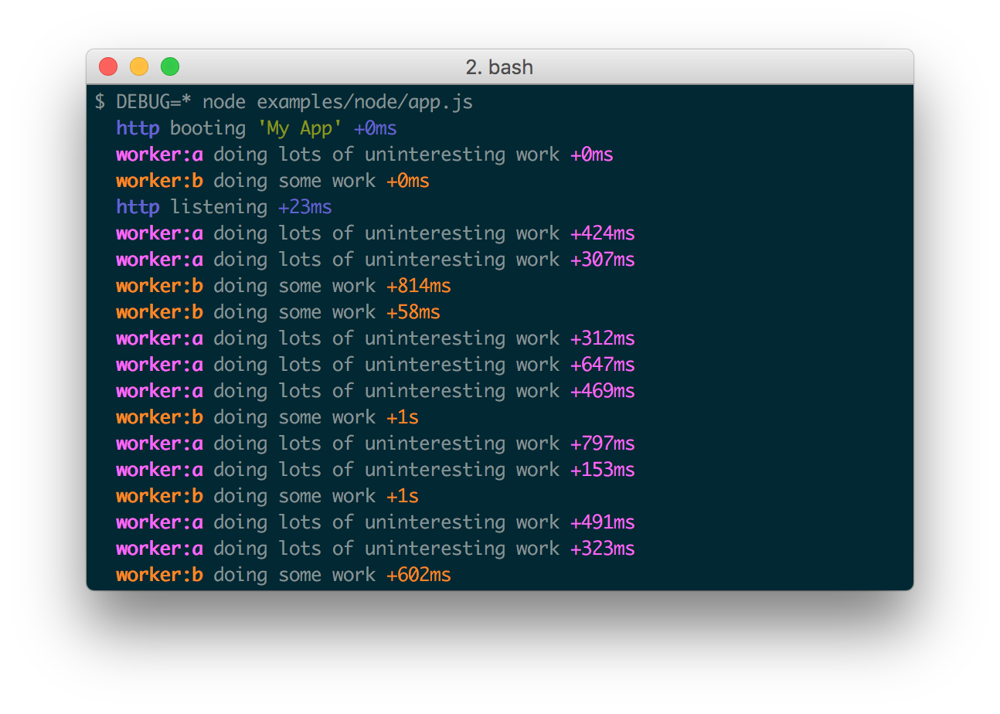
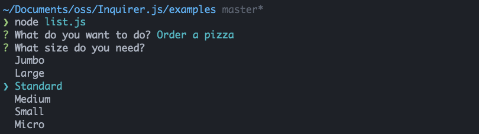

[TOC]
有用的 npm 包整理
node 相关
fs-extra
提供一些文件管理的方法, 类似mkdir, copy, ensureDir... 的方法,是对fs模块的扩展, 可以使用fs的所有方法, 安装fs-extra后可以不再require fs模块
klaw-sync
klaw-sync 循环读取文件目录
chokidar 文件监听 watch file
https://www.npmjs.com/package/chokidar
gulp, karma, PM2,browserify, webpack, BrowserSync, Microsoft's Visual Studio Code, and many others项目中都使用该包作为watch file库
scribe
用来处理node中的logger
https://www.npmjs.com/package/scribe
cors 处理跨域
主要用来处理跨域, 结合express使用.
https://github.com/expressjs/cors
chalk
node控制台中输出彩色的文案
const chalk = require('chalk');
console.log(chalk.blue('Hello world!'));
https://www.npmjs.com/package/chalk
ws websocket
ws 服务端用来实现websocket
https://www.npmjs.com/package/ws
http-proxy-middleware 请求代理转发中间件
https://www.npmjs.com/package/http-proxy-middleware
commander 命令行处理
https://npm.taobao.org/package/commander
用于node脚本命令行参数处理
nodemon node进程监视器
用于管理node服务
https://www.npmjs.com/package/nodemon
keygrip 用来做验证
https://www.npmjs.com/package/keygrip
memory-fs 用来在内存中创建文件目录,
可以在内存中进行读写操作, 极大提高IO效率. webpack devserver 就使用了该机制.
https://juejin.im/entry/5769f8dc128fe10057d2f4ae
var MemoryFileSystem = require("memory-fs");
var fs = new MemoryFileSystem(); // Optionally pass a javascript object
fs.mkdirpSync("/a/test/dir");
fs.writeFileSync("/a/test/dir/file.txt", "Hello World");
fs.readFileSync("/a/test/dir/file.txt"); // returns Buffer("Hello World")
// Async variants too
fs.unlink("/a/test/dir/file.txt", function(err) {
// ...
});
fs.readdirSync("/a/test"); // returns ["dir"]
fs.statSync("/a/test/dir").isDirectory(); // returns true
fs.rmdirSync("/a/test/dir");
fs.mkdirpSync("C:\\use\\windows\\style\\paths");
colors
console.log加颜色
https://www.npmjs.com/package/colors
http-proxy 转发http请求
https://www.npmjs.com/package/http-proxy
http-proxy-middleware的转发使用的也是该包
recursive-copy
复制文件。 把一个目录中的文件复制到另外一个文件
https://www.npmjs.com/package/recursive-copy
var copy = require('recursive-copy');
copy('src', 'dest', function(error, results) {
if (error) {
console.error('Copy failed: ' + error);
} else {
console.info('Copied ' + results.length + ' files');
}
});
json-server 建立json服务
建立json服务, 可以用来mock数据
https://www.npmjs.com/package/json-server
urllib node发送url请求
https://npm.taobao.org/package/urllib
var urllib = require('urllib');
urllib.request('http://cnodejs.org/', function (err, data, res) {
if (err) {
throw err; // you need to handle error
}
console.log(res.statusCode);
console.log(res.headers);
// data is Buffer instance
console.log(data.toString());
});
rimraf
rimraf build
可以在node中使用的功能类似 rm -rf 的命令 https://github.com/isaacs/rimraf
mkdirp
可以在node中使用的功能类似 mkdir 的命令
markdown mermaid
用于markdown生成甘特图等的命令行工具
execa
执行shell命令 对 child_process.exec的封装, 提供了promise接口
https://www.npmjs.com/package/execa
shelljs
https://www.npmjs.com/package/shelljs
执行shell命令的js库, 兼容windows/linux/OS X
ora
命令行 loading
https://www.npmjs.com/package/ora
memory-fs
js 的一个内存文件系统， 文件作为 js 对象存储
https://www.npmjs.com/package/memory-fs
var MemoryFileSystem = require("memory-fs");
var fs = new MemoryFileSystem(); // Optionally pass a javascript object
fs.mkdirpSync("/a/test/dir");
fs.writeFileSync("/a/test/dir/file.txt", "Hello World");
fs.readFileSync("/a/test/dir/file.txt"); // returns Buffer("Hello World")
// Async variants too
fs.unlink("/a/test/dir/file.txt", function(err) {
// ...
});
fs.readdirSync("/a/test"); // returns ["dir"]
fs.statSync("/a/test/dir").isDirectory(); // returns true
fs.rmdirSync("/a/test/dir");
fs.mkdirpSync("C:\\use\\windows\\style\\paths");
Browserify 浏览器环境
superagent HTTP请求库
发送http请求
http://npm.sankuai.com/package/superagent
winston Logging库
https://www.npmjs.com/package/winston
A multi-transport async logging library for node.js.
debug 打印日志库
node log 工具，也可以用于浏览器环境

inquirer 交互式命令行库
inquirer 命令行交互式库

ware
中间件工具，一个库如果以中间件的形式执行任务，可以用该库实现
var ware = require('ware');
var middleware = ware()
.use(function (req, res, next) {
res.x = 'hello';
next();
})
.use(function (req, res, next) {
res.y = 'world';
next();
});
middleware.run({}, {}, function (err, req, res) {
res.x; // "hello"
res.y; // "world"
});
MetalSmith
以插件的形式处理静态文件。 常用做脚手架中的模板替换工具
https://www.npmjs.com/package/metalsmith
webpack 插件
查看项目的包关系
可以查看分析当前项目中各个模块文件的占用情况
http-proxy-middleware 请求转发中间件
https://www.npmjs.com/package/http-proxy-middleware
happypack
利用多线程来加速wepack的构建速度
gulp 插件
webpack-stream
用于在gulp任务流中插入webpack处理过程
gulp-footer
https://www.npmjs.com/package/gulp-footer
在文件底部插入另一个文件内容
gulp-concat
连接多个文件
gulp-replace
替换文件中指定的内容
gulp-rename
重命名文件
gulp-clone
在内存中复制文件
其他
用来预处理css, 可以增加 autoprefixer, 引入变量混合等
lerna
在一个项目中管理多个子packages的发布
prettier
用来格式化代码
husky 包 git hook
https://www.npmjs.com/package/husky
用来设置git hook
git-hooks
https://www.npmjs.com/package/git-hooks
normalizr
用于把一个嵌套的数据结构扁平化
https://github.com/paularmstrong/normalizr
redux-form
表单处理库
react-styleguidist
用来生成react项目文档
https://www.npmjs.com/package/react-styleguidist
semver
语义化版本判断库